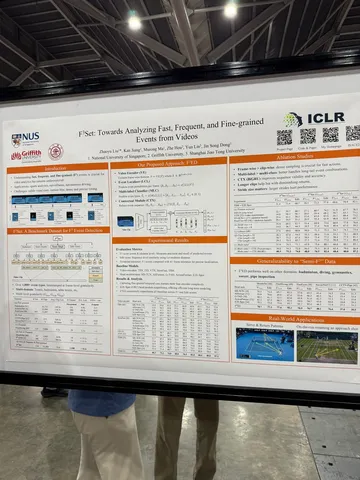
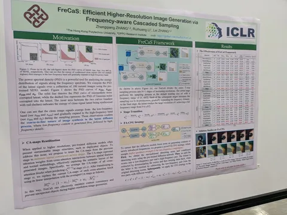
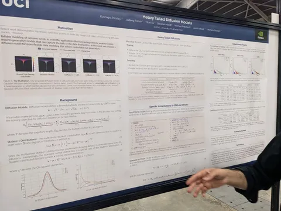
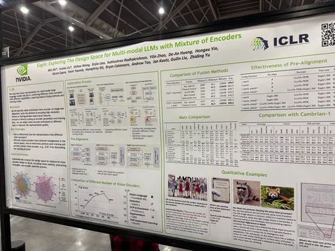
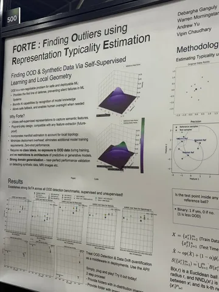
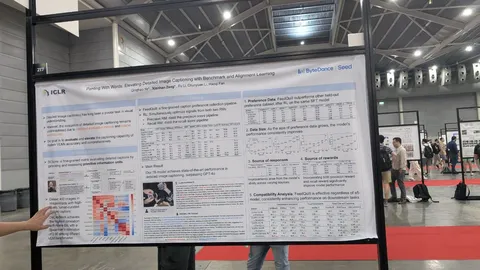
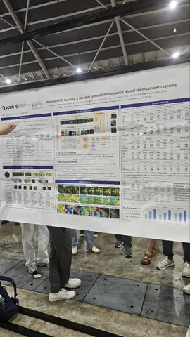
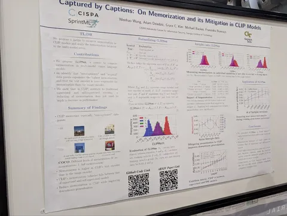

Наши корреспонденты уже принесли обзоры работ первого дня конференции, 24 апреля. Пишите в комментариях, какие идеи зацепили и о чём ещё хотите узнать.
Eagle: Exploring The Design Space for Multi-modal LLMs with Mixture of Encoders
Авторы из NVIDIA исследуют, как использование нескольких предобученных vision-энкодеров помогает моделям лучше справляться со сложными визуальными задачами, такими как OCR и анализ документов. Каждый энкодер обучали отдельно с зафриженной 7B моделью Vicuna. На заключительных этапах объединяли все экодеры и обучали финальную модель.
Heavy Tailed Diffusion Models
У распределения картинок тяжёлый хвост, у нормального — лёгкий. Есть теоретическое обоснование, что из-за липшицевости нейросети диффузионка не может генерировать из распределения с лёгким хвостом распределение с тяжёлым.
FreCaS: Efficient Higher-Resolution Image Generation via Frequency-aware Cascaded Sampling
Генерируют картинки 2048 на основе модели, предобученной для 1024. На каждой стадии используется одна и та же модель, на ood-разрешениях подменяются аттеншн-мапы.
FORTE: Finding Outliers using Representation Typicality Estimation
Сделали фреймворк для автоматического нахождения аутлайеров в данных. Достаточно дать данные и несколько референсных точек, и можно будет получить оценку аутлайерности. Может быть полезно, например, для нахождения фото в карточках организации, которые к организации не имеют отношения.
Painting With Words: Elevating Detailed Image Captioning with Benchmark and Alignment Learning
Валидируют image captions, разбивая на крошечные утверждения и валидируя GPT (точность 85+), потом собирают два реворда на полноту и точность — пыщ-пыщ — профит.
Captured by Captions: On Memorization and its Mitigation in CLIP Models
Разработали метрику для выявления неправильно аннотированных текстов для обучения clip'a. Утверждают, что хороший буст качества даёт группировка мисанноипованных (неправильно аннотированных) картинок в один батч.
F³Set: Towards Analyzing Fast, Frequent, and Fine-grained Events from Videos
Находят события на сложных видео с блюром и быстрыми изменениями, например спортивных трансляциях. Архитектура: детектор ивента, классификатор ивента, блендим и в GRU. Может быть полезно, чтобы найти красивый кадр на превью пользовательских видео.
WeatherGFM: Learning A Weather Generalist Foundation Model via In-context Learning
Предлагают учить одну модельку под все погодные задачи. И при этом задавать визуальным промптом, что именно модели необходимо сделать: наукаст, сегментацию спутника и прочее. На первый взгляд, выглядит прикольно, но из погодных моделей сравниваются только с IFS и ClimaX.
High-Dynamic Radar Sequence Prediction for Weather Nowcasting Using Spatiotemporal Coherent Gaussian Representation
Идея статьи в том, чтобы представить 3D-информацию об осадках с помощью набора гауссиан, а потом их преобразовывать, чтобы получить наукастовый прогноз. Потом из новых гауссиан восстанавливается финальное поле осадков. Правда extreme-ивенты авторы не рассматривают.
Интересные постеры увидели
CV Time
#YaICLR
